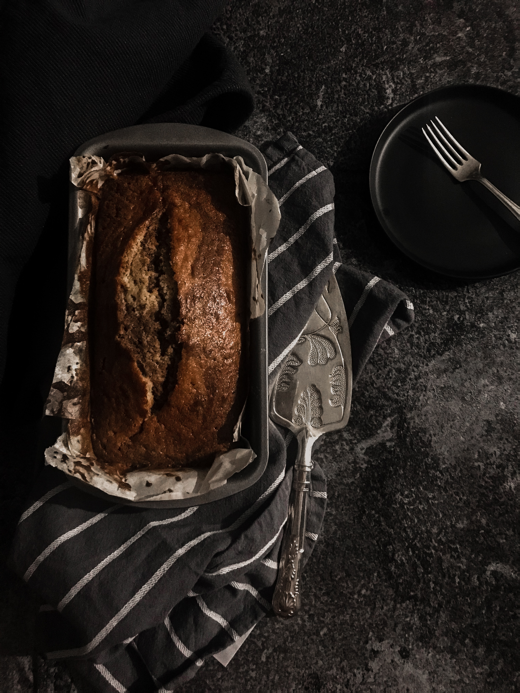

Banana Bread

The best banana bread you've ever tried
Put those ripe bananas to use in the best banana bread recipe ever. Moist and delicious, it's easy to
make—one bowl, no need for a mixer!
Ingredients
- 2 to 3 medium very ripe bananas
- 1/3 cup butter, unsalted or salted, melted
- ½ teaspoon baking soda
- 1 pinch salt
- ¾ cup sugar
- 1 large egg, beaten
- 1 teaspoon vanilla extract
- 1 ½ cups all-purpose flour
Steps
- Preheat the oven to 350°F (175°C), and butter an 8 x 4-inch loaf pan.
- In a mixing bowl, mash the ripe bananas with a fork until completely smooth. Stir the melted butter into
the mashed bananas.
- Mix in the baking soda and salt. Stir in the sugar, beaten egg, and vanilla extract. Mix in the flour.
- Pour the batter into your prepared loaf pan.
- Bake for 55 to 65 minutes at 350°F (175°C), or until a toothpick or wooden skewer inserted into the
center comes out clean. A few dry crumbs are okay; streaks of wet batter are not. If the outside of the
loaf is browned but the center is still wet, loosely tent the loaf with foil and continue baking until
the loaf is fully baked.
- Remove from oven and let cool in the pan for a few minutes. Then remove the banana bread from the pan
and let cool completely before serving. Slice and serve. (A bread knife helps to make slices that aren't
crumbly.)
Back